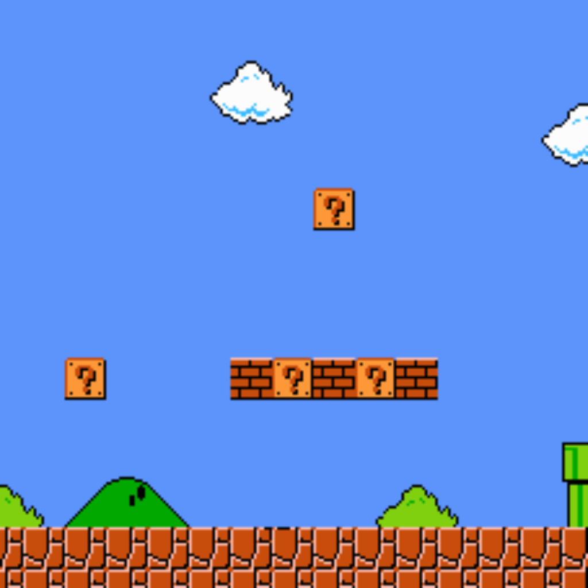

PROJECT
This AI has been trained to convert the sprites of the Super Mario Bros game into more realistic materials. After several tests and months of development, we have decided to share some images with the best results so you can appreciate what this machine is capable of.
Click on [SEE CHANGES] to see the results.
